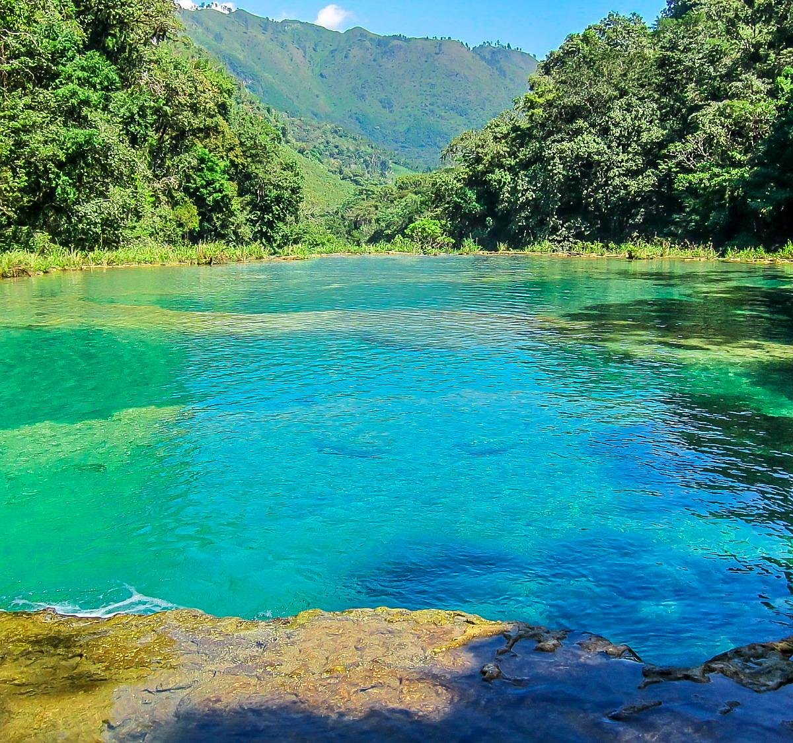
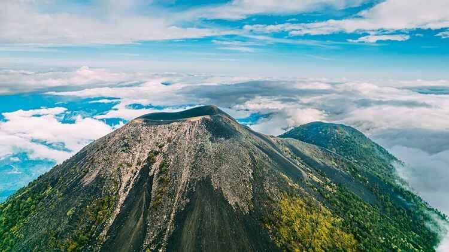
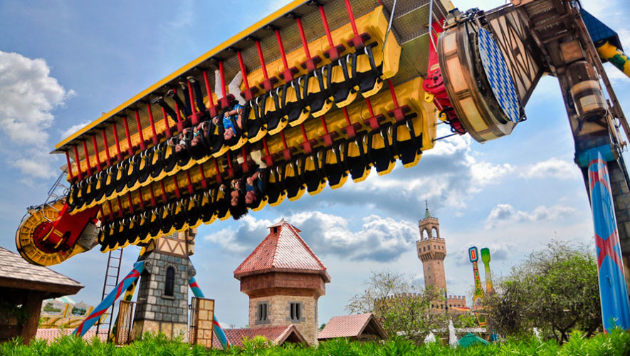

Antigua Guatemala
Ciudad colonial famosa por su arquitectura histórica y cultura.
★★★★☆
Sacatepéquez, Guatemala
Ver ubicación

Lago de Atitlán
Uno de los lagos más hermosos y famosos del mundo.
★★★★★
Sololá, Guatemala
Ver ubicación


Semuc Champey
Monumento natural famoso por sus pozas de agua turquesa y paisajes únicos.
★★★★★
Alta Verapaz, Guatemala
Ver ubicación

Volcán de Acatenango
Uno de los destinos favoritos para senderismo y observación del Volcán de Fuego.
★★★★✩
Chimaltenango, Guatemala
Ver ubicación

Xetulul
Uno de los parques de diversiones más famosos de Guatemala y Latinoamérica.
★★★★★
Retalhuleu, Guatemala
Ver ubicación